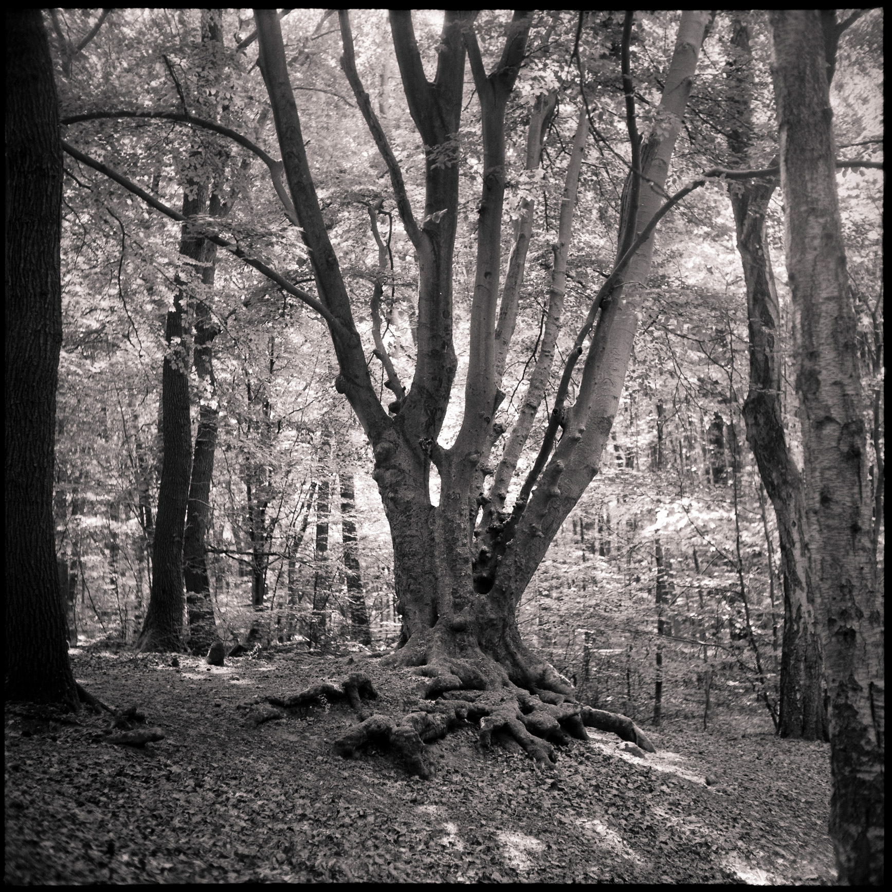
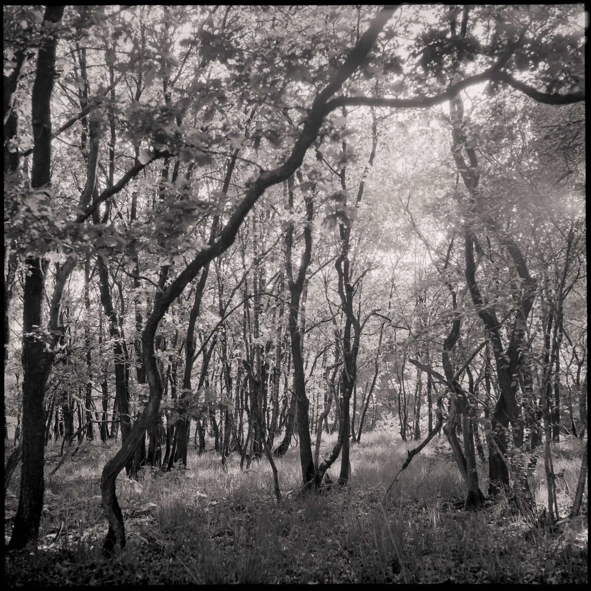

Forest Glow
Mook Molenhoek


Forest Glow
Capturing the soft light peaking through the forest canopy on a nice Sunday morning.
Photos were shot using a Yashica-Mat 6×6 (1957) with a 80mm Yashinon f3.5 on Rollei RPX 400 film.
Capturing the soft light peaking through the forest canopy on a nice Sunday morning.
Photos were shot using a Yashica-Mat 6×6 (1957) with a 80mm Yashinon f3.5 on Rollei RPX 400 film.